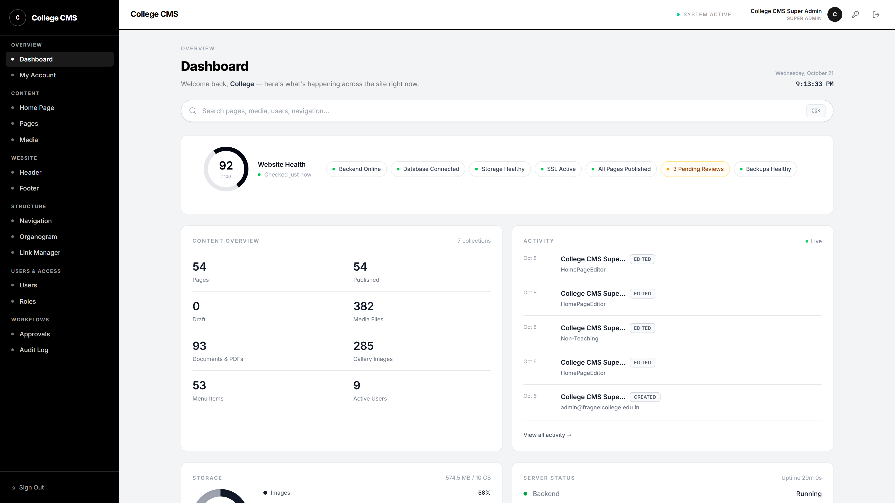
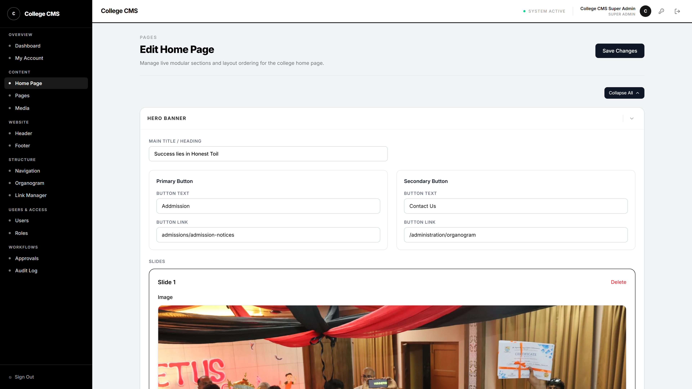
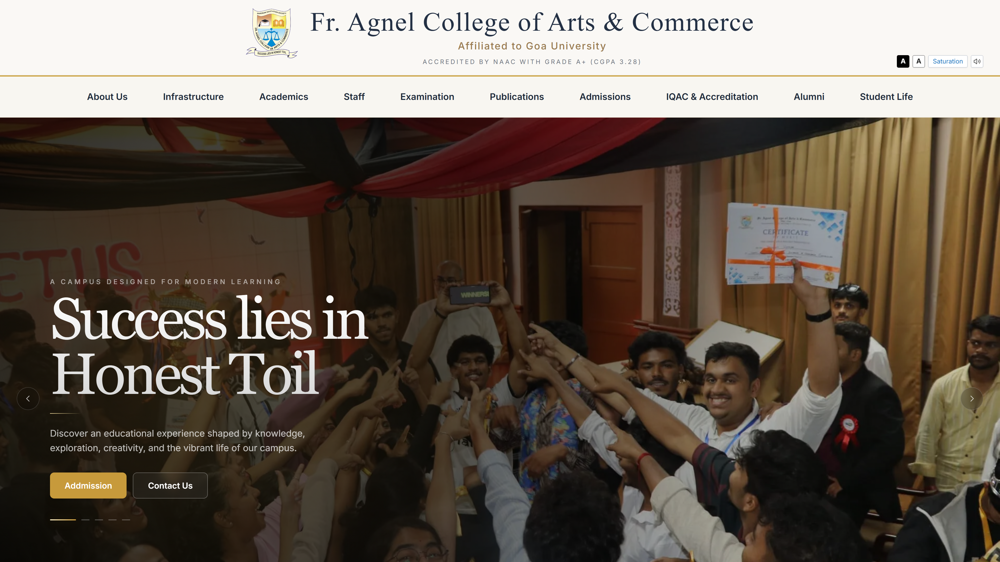

Real-Time Infrastructure Telemetry
Website Health 92/100 • Zero-Downtime Architecture
https://cms.fragnelcollege.edu.in/admin

Live Health 92/100
https://cms.fragnelcollege.edu.in/admin/home


Changes Published to Live Campus
https://cms.fragnelcollege.edu.in/admin/pages

https://cms.fragnelcollege.edu.in/admin/approvals

✓ Approved & Live
https://cms.fragnelcollege.edu.in/admin/users

https://cms.fragnelcollege.edu.in/admin
https://fragnelcollege.edu.in
FR AGNEL COLLEGE CMS
ONE PLATFORM. COMPLETE CONTROL.
Accredited by NAAC with Grade A+ (CGPA 3.28) • Affiliated to Goa University • Established 1991